Hazel 游戏引擎笔记 009：事件系统
本节来源：The Cherno 游戏引擎系列第 9 讲“事件系统”，时长约 35 分 40 秒。
原课程与 Hazel 代码作者：The Cherno。代码参考提交：34df416。
本文由视频字幕重构、翻译并整理，不是官方教材；术语和代码以原视频及同期 Hazel 仓库为准。
本节目标
上一讲完成了事件系统的设计，这一讲开始把设计真正落进 Hazel。由于事件系统涉及的文件和代码量较大，Cherno 改变了系列视频的组织方式：不再从零逐行敲出全部实现，而是把开发分支中已经使用和验证过的代码合并到公开仓库，再通过代码差异逐一解释。
这种形式把注意力从“如何打字”转向“为什么这样设计”。本节最终会得到一套可运行的阻塞式事件系统，包括：
Event基类与事件类型、事件分类元数据；- 键盘、鼠标和应用程序事件的具体类型；
- 用于减少重复代码的事件宏；
- 根据事件类型自动调用处理函数的
EventDispatcher； - 与日志系统、Premake 和应用程序入口的集成；
- 一个创建、分类和记录
WindowResizeEvent的基础测试。
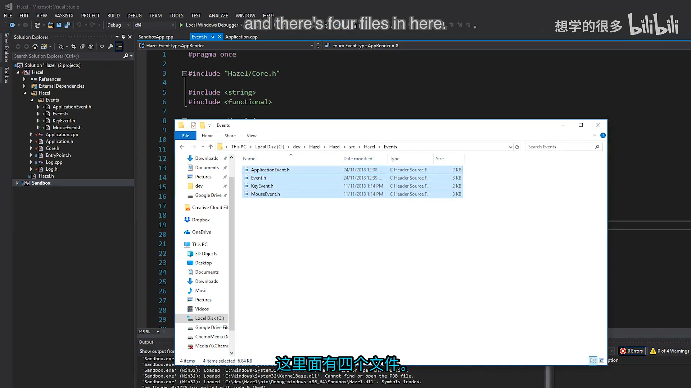
📷 Hazel 项目中的 Events 文件夹与四个事件文件
回到原视频 (00:03:48)
1. 为什么需要事件系统
(参考时间: 00:04:49)
游戏引擎中的窗口、输入设备、渲染器和游戏逻辑经常需要互相通知状态变化，但各模块又不应该彼此紧紧绑定。事件系统提供了一个中间的、统一的通知接口：产生事件的模块只负责描述“发生了什么”，接收方再决定是否关心以及如何处理。
本节实现的是阻塞式事件系统：
- 事件发生后立即分发，不进入队列，也不延迟到下一帧；
- 一旦事件被处理，当前调用链必须马上完成对应工作；
- 事件可以被标记为“已处理”，避免继续传播给下层；
- 未来可以选择改造成事件总线或缓冲队列，但当前版本优先保持简单直接。
阻塞式设计并不意味着事件无法被“消费”。例如当界面按钮收到鼠标点击并确认鼠标位于按钮范围内时，它可以把事件标记为已处理，阻止游戏世界再次收到同一次点击。
graph TD
A[窗口或输入设备产生事件] --> B[封装为具体 Event 对象]
B --> C[立即调用 EventDispatcher]
C --> D{事件类型是否匹配?}
D -- 否 --> E[尝试下一个处理函数]
D -- 是 --> F[调用对应处理函数]
F --> G{处理函数返回 true?}
G -- 是 --> H[标记 m_Handled 并阻止继续传播]
G -- 否 --> E
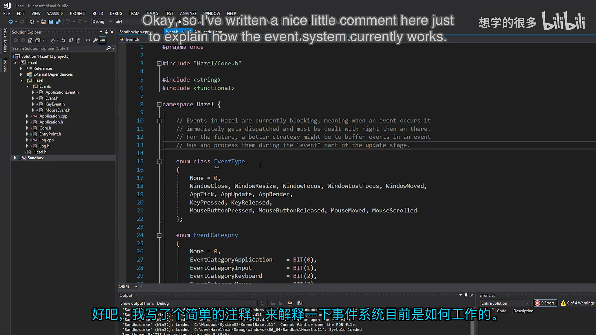
📷 事件系统架构说明与阻塞式设计注释
回到原视频 (00:04:52)
2. 事件元数据：类型与分类
事件系统位于 Hazel/src/Hazel/Events，主要有四个文件：
Event.h：事件系统核心，包含事件基类、类型枚举、分类位标志和分发器；ApplicationEvent.h：窗口关闭、窗口缩放、应用 tick/update/render 等事件；KeyEvent.h：按键按下、按键释放以及共享的按键基类；MouseEvent.h：鼠标移动、滚轮、按键按下和释放事件。
2.1 EventType 用来判断“这是什么事件”
EventType 为每一种具体事件分配稳定的整数标识。分发器不需要使用 dynamic_cast 或运行时类型信息，只要比较这个标识，就能知道事件属于哪个具体类型。
enum class EventType
{
None = 0,
WindowClose, WindowResize,
WindowFocus, WindowLostFocus, WindowMoved,
AppTick, AppUpdate, AppRender,
KeyPressed, KeyReleased,
MouseButtonPressed, MouseButtonReleased,
MouseMoved, MouseScrolled
};
视频里特别指出，鼠标滚动等事件之所以已经出现在代码中，是因为这份实现来自长期使用的开发分支；它比现场临时设计的原型更成熟，也更容易覆盖真实输入场景。
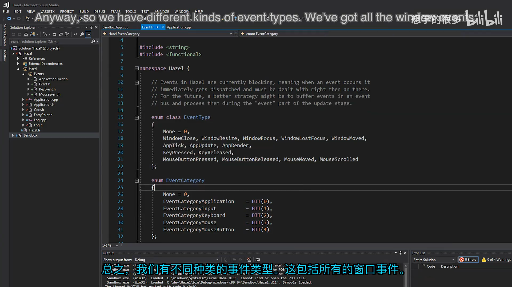
📷 EventType 枚举与事件类型列表
回到原视频 (00:06:40)
2.2 EventCategory 用来判断“我是否关心这一类事件”
仅靠具体类型过滤会非常繁琐。例如一个模块想记录所有鼠标事件，却不想同时写出鼠标移动、滚轮、按钮按下和按钮释放四种判断。事件分类提供了更粗粒度、也更符合调用方意图的过滤方式。
分类采用位字段，而不是连续的 0、1、2、3。这样同一种事件可以同时属于多个分类：
- 按键事件既属于
Keyboard，也属于Input； - 鼠标事件既属于
Mouse，也属于Input； - 鼠标按钮事件还可以同时属于
MouseButton； - 窗口缩放和关闭事件属于
Application。
#define BIT(x) (1 << x)
enum EventCategory
{
None = 0,
EventCategoryApplication = BIT(0),
EventCategoryInput = BIT(1),
EventCategoryKeyboard = BIT(2),
EventCategoryMouse = BIT(3),
EventCategoryMouseButton = BIT(4)
};
判断分类时只需要进行按位与运算：
inline bool IsInCategory(EventCategory category)
{
return GetCategoryFlags() & category;
}
结果为零表示不属于该分类；任何非零值都表示至少属于该分类。事件当然可以同时属于更多分类。
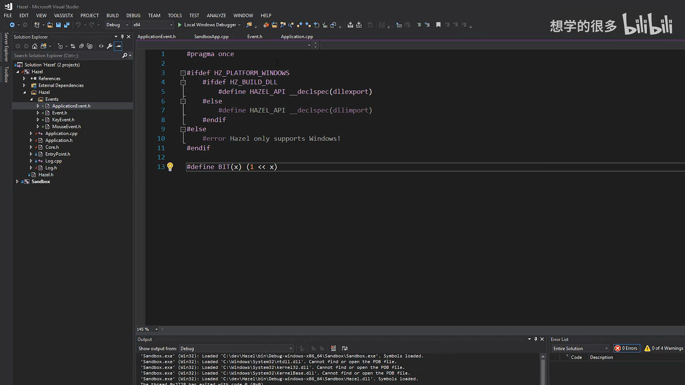
📷 事件分类位字段与 BIT 宏
回到原视频 (00:08:54)
3. Event 基类
Event 是所有具体事件的公共基类，主要承担三类职责：
- 暴露事件类型、名称和分类查询接口；
- 保存
m_Handled状态，支持事件消费和传播控制； - 提供默认字符串输出，必要时允许具体事件补充详情。
class HAZEL_API Event
{
friend class EventDispatcher;
public:
virtual EventType GetEventType() const = 0;
virtual const char* GetName() const = 0;
virtual int GetCategoryFlags() const = 0;
virtual std::string ToString() const { return GetName(); }
inline bool IsInCategory(EventCategory category)
{
return GetCategoryFlags() & category;
}
protected:
bool m_Handled = false;
};
3.1 纯虚接口保证每种事件都完整
GetEventType、GetName 和 GetCategoryFlags 是纯虚函数。任何可以直接实例化的事件类型都必须提供这些信息，否则无法通过编译。
GetName 返回的是 const char*，并不是动态分配的字符串。事件名称主要服务于调试和日志，不应出现在游戏运行时的热路径中。
3.2 ToString 是调试接口
默认实现只返回事件名称。带数据的事件可以重写它，让日志包含更有诊断价值的信息：
WindowResizeEvent输出新的宽度和高度；KeyPressedEvent输出键码和重复次数；MouseMovedEvent输出鼠标坐标；MouseScrolledEvent输出水平和垂直滚动偏移。
格式化会使用 std::stringstream，可能发生内存分配，因此它只应该用于排错，不应该成为游戏运行逻辑的一部分。
📷 Event 基类、m_Handled 与分类判断
回到原视频 (00:09:53)
4. 具体事件类型
4.1 键盘事件与按键重复
键盘事件有一个共同数据：按下的键码。因此代码先建立 KeyEvent 基类保存 m_KeyCode，再由 KeyPressedEvent 和 KeyReleasedEvent 派生。
KeyEvent 的构造函数是 protected，表示它可以作为继承层次中的公共实现，但不应被直接实例化。
class HAZEL_API KeyEvent : public Event
{
public:
inline int GetKeyCode() const { return m_KeyCode; }
EVENT_CLASS_CATEGORY(EventCategoryKeyboard | EventCategoryInput)
protected:
KeyEvent(int keycode)
: m_KeyCode(keycode) {}
int m_KeyCode;
};
按键按下事件还保存 repeatCount：
class HAZEL_API KeyPressedEvent : public KeyEvent
{
public:
KeyPressedEvent(int keycode, int repeatCount)
: KeyEvent(keycode), m_RepeatCount(repeatCount) {}
inline int GetRepeatCount() const { return m_RepeatCount; }
EVENT_CLASS_TYPE(KeyPressed)
private:
int m_RepeatCount;
};
repeatCount == 0 表示用户刚刚按下按键；随后系统可能继续发送重复事件。这个差异对菜单选择非常重要：若只处理第一次按下，用户按住方向键时可能只移动一次；若不加区分地连续处理，按住键又会高速循环。
利用重复计数，可以明确区分“开始移动”和“连续移动”，或在菜单中等待系统自带的首次重复延迟。视频中的终端演示清楚地展示了：第一次出现字母 A 后有一次停顿，随后才出现连续重复。
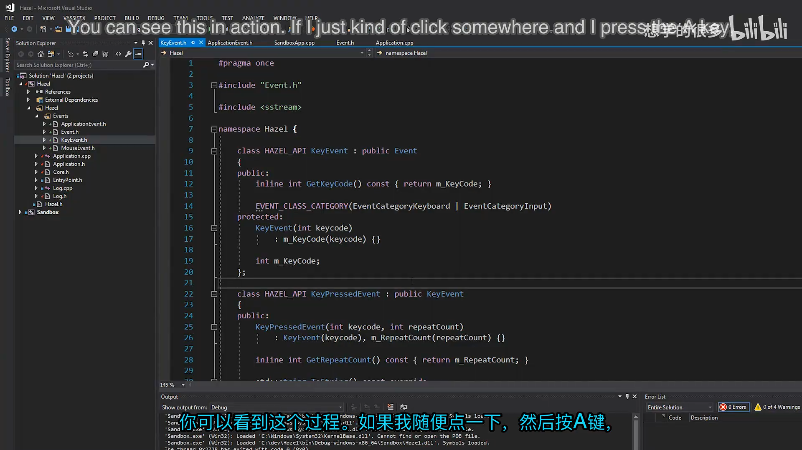
📷 按住 A 键时首次按下与连续重复的终端效果
回到原视频 (00:14:54)
KeyReleasedEvent 的结构更简单，只需要记录哪一个键被释放：
class HAZEL_API KeyReleasedEvent : public KeyEvent
{
public:
KeyReleasedEvent(int keycode)
: KeyEvent(keycode) {}
EVENT_CLASS_TYPE(KeyReleased)
};
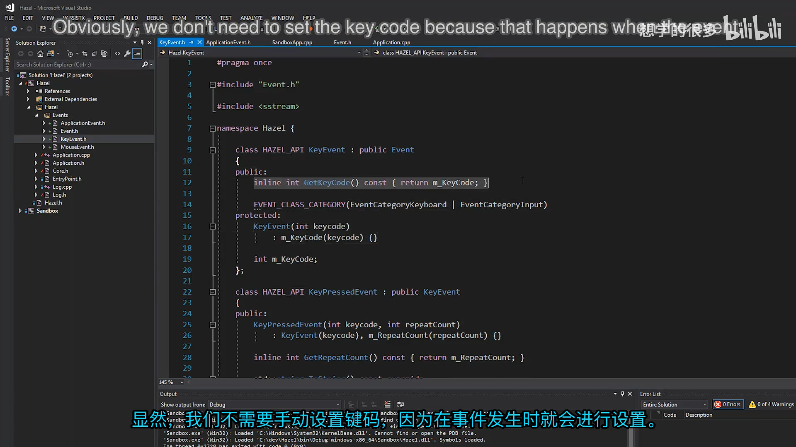
📷 KeyEvent、KeyPressedEvent 与重复计数实现
回到原视频 (00:15:45)
4.2 鼠标事件
MouseMovedEvent 保存当前鼠标的 x、y 坐标：
class HAZEL_API MouseMovedEvent : public Event
{
public:
MouseMovedEvent(float x, float y)
: m_MouseX(x), m_MouseY(y) {}
inline float GetX() const { return m_MouseX; }
inline float GetY() const { return m_MouseY; }
EVENT_CLASS_TYPE(MouseMoved)
EVENT_CLASS_CATEGORY(EventCategoryMouse | EventCategoryInput)
private:
float m_MouseX, m_MouseY;
};
滚轮事件同时保存水平和垂直偏移。部分鼠标或触控板具备横向滚动能力，因此不能只记录传统的 yOffset：
class HAZEL_API MouseScrolledEvent : public Event
{
public:
MouseScrolledEvent(float xOffset, float yOffset)
: m_XOffset(xOffset), m_YOffset(yOffset) {}
inline float GetXOffset() const { return m_XOffset; }
inline float GetYOffset() const { return m_YOffset; }
EVENT_CLASS_TYPE(MouseScrolled)
EVENT_CLASS_CATEGORY(EventCategoryMouse | EventCategoryInput)
private:
float m_XOffset, m_YOffset;
};
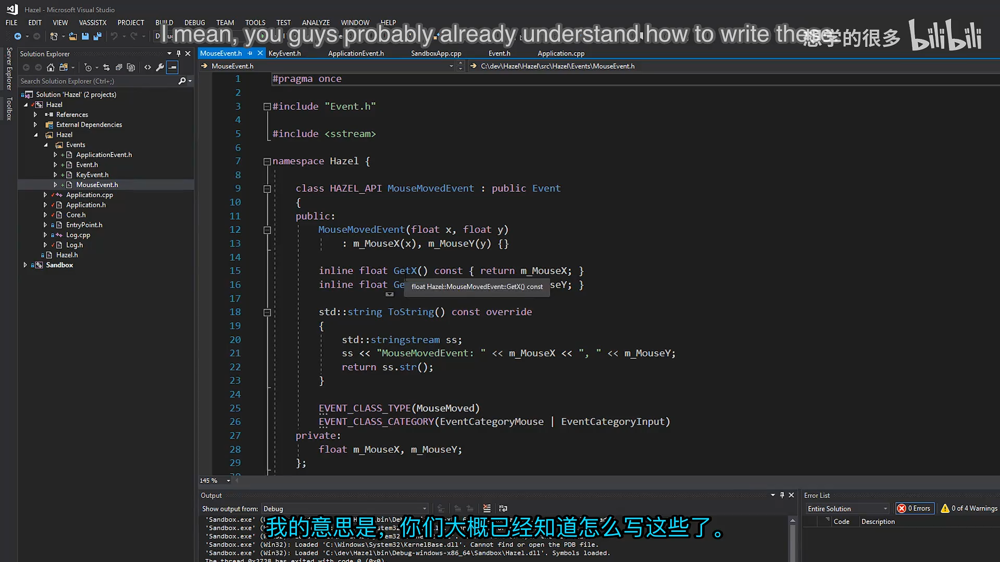
📷 MouseMovedEvent 与鼠标坐标实现
回到原视频 (00:22:56)
鼠标按钮也采用继承结构。MouseButtonEvent 保存按钮编号，按钮按下和释放事件共享这一部分：
class HAZEL_API MouseButtonEvent : public Event
{
public:
inline int GetMouseButton() const { return m_Button; }
EVENT_CLASS_CATEGORY(EventCategoryMouse | EventCategoryInput)
protected:
MouseButtonEvent(int button)
: m_Button(button) {}
int m_Button;
};
随后分别实现 MouseButtonPressedEvent 与 MouseButtonReleasedEvent。它们拥有自己的事件类型，并通过基类共享按钮数据。
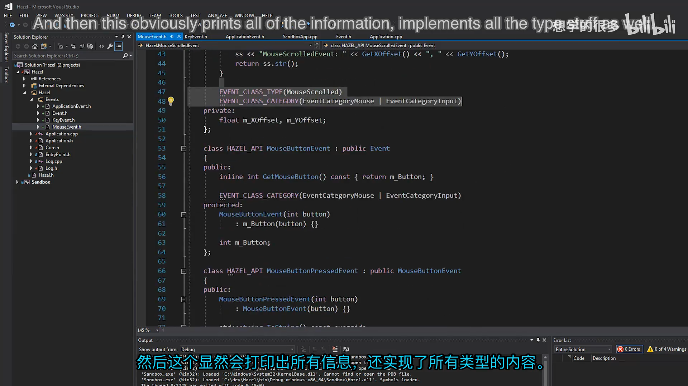
📷 鼠标按钮基类与按下、释放事件
回到原视频 (00:24:34)
4.3 应用程序事件
WindowCloseEvent 不含额外数据，只表示窗口即将关闭：
class HAZEL_API WindowCloseEvent : public Event
{
public:
WindowCloseEvent() {}
EVENT_CLASS_TYPE(WindowClose)
EVENT_CLASS_CATEGORY(EventCategoryApplication)
};
WindowResizeEvent 则记录缩放后的宽高：
class HAZEL_API WindowResizeEvent : public Event
{
public:
WindowResizeEvent(unsigned int width, unsigned int height)
: m_Width(width), m_Height(height) {}
inline unsigned int GetWidth() const { return m_Width; }
inline unsigned int GetHeight() const { return m_Height; }
EVENT_CLASS_TYPE(WindowResize)
EVENT_CLASS_CATEGORY(EventCategoryApplication)
private:
unsigned int m_Width, m_Height;
};
同一文件中还定义了 AppTickEvent、AppUpdateEvent 和 AppRenderEvent。不过 Cherno 表示自己还没有完全决定是否要使用它们：这些调用是应用程序固有的主循环阶段，强行包装成事件未必比直接调用更合理。因此它们暂时保留为备选设计，而不是立即进入核心流程。
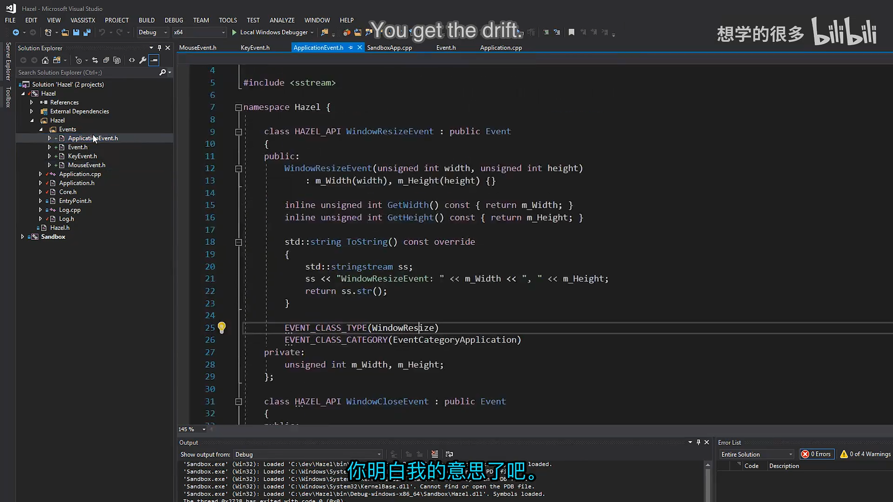
📷 窗口缩放、关闭以及应用循环事件
回到原视频 (00:24:56)
事件类的整体继承关系可以概括为：
graph TD
E[Event] --> A[ApplicationEvent]
E --> K[KeyEvent]
E --> M[MouseEvent]
A --> WC[WindowCloseEvent]
A --> WR[WindowResizeEvent]
A --> TU[AppTick / Update / Render]
K --> KP[KeyPressedEvent]
K --> KR[KeyReleasedEvent]
M --> MM[MouseMovedEvent]
M --> MS[MouseScrolledEvent]
M --> MB[MouseButtonEvent]
MB --> MBP[MouseButtonPressedEvent]
MB --> MBR[MouseButtonReleasedEvent]
5. 用宏消除事件类的重复代码
每种具体事件都要提供三个看似固定、但实现细节略有不同的成员：
- 一个静态的
GetStaticType()； - 一个虚函数
GetEventType()，返回对应的静态类型； - 一个
GetName()，用于调试。
逐个手写既冗长又容易出错，因此使用 EVENT_CLASS_TYPE 宏统一生成：
#define EVENT_CLASS_TYPE(type) \
static EventType GetStaticType() { return EventType::type; } \
virtual EventType GetEventType() const override \
{ return GetStaticType(); } \
virtual const char* GetName() const override { return #type; }
分类则通过另一个宏写入：
#define EVENT_CLASS_CATEGORY(category) \
virtual int GetCategoryFlags() const override { return category; }
调用方只需要写：
EVENT_CLASS_TYPE(KeyPressed)
EVENT_CLASS_CATEGORY(EventCategoryKeyboard | EventCategoryInput)
为什么同时需要静态的 GetStaticType() 和虚的 GetEventType()？
- 静态函数可以直接通过类型名调用，不需要先创建对象；
- 虚函数允许通过
Event&或Event*查询多态对象的真实类型； - 分发器正好利用前者判断模板类型，利用后者检查当前事件对象。
静态函数提供编译期已知的类型标识，虚函数再把这套标识暴露给运行时基类引用，两者一起构成分发器的类型判断基础。
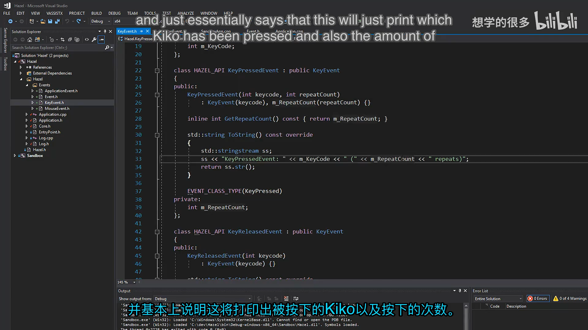
📷 EVENT_CLASS_TYPE 与分类宏的实现
回到原视频 (00:18:26)
6. EventDispatcher：让分发代码保持简洁
事件系统最直接的用法是写出一连串判断：
if (event.GetEventType() == EventType::WindowResize)
{
auto& resizeEvent = static_cast<WindowResizeEvent&>(event);
OnWindowResize(resizeEvent);
}
else if (event.GetEventType() == EventType::KeyPressed)
{
auto& keyEvent = static_cast<KeyPressedEvent&>(event);
OnKeyPressed(keyEvent);
}
这种调用端代码重复度高，而且类型判断和强制转换容易写错。EventDispatcher 把这一套模式封装起来：
class EventDispatcher
{
template<typename T>
using EventFn = std::function<bool(T&)>;
public:
EventDispatcher(Event& event)
: m_Event(event)
{
}
template<typename T>
bool Dispatch(EventFn<T> func)
{
if (m_Event.GetEventType() == T::GetStaticType())
{
m_Event.m_Handled = func(*(T*)&m_Event);
return true;
}
return false;
}
private:
Event& m_Event;
};
分发过程只有四步：
- 比较当前事件的运行时类型和模板参数
T的静态类型； - 若不一致，直接返回
false； - 若一致，把基类引用转换为具体事件类型并调用处理函数；
- 用处理函数的返回值更新
m_Handled。
调用方可以连续注册多个处理分支：
EventDispatcher dispatcher(e);
dispatcher.Dispatch<WindowResizeEvent>(
[](WindowResizeEvent& event) {
return OnWindowResize(event);
});
处理函数返回 true 时，事件被标记为已处理，可用于阻止事件继续向其他层传播。尽管当前实现使用 std::function 和 C 风格指针转换，接口对客户端仍然足够直观，也把类型判断和具体类型转换集中在一个地方。
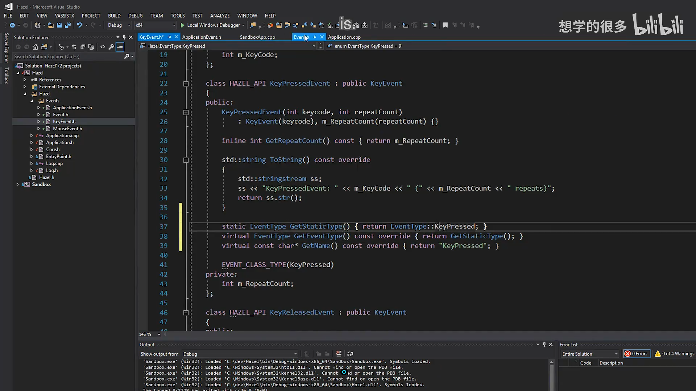
📷 EventDispatcher 的类型判断与分发逻辑
回到原视频 (00:21:06)
7. 与现有工程的集成
7.1 Premake 配置
本次工程配置修改集中在两个方面：
- 使用 Premake 的
"latest"系统版本，避免硬编码 Windows SDK 版本； - 将 Hazel 的
src目录加入包含路径，使代码可以统一写Hazel/...。
统一包含路径后，事件文件不需要计算“从当前目录回退几层”。即使文件以后移动到别的子目录，包含路径也不必逐个修改。
includedirs
{
"%{prj.name}/src",
"%{prj.name}/vendor/spdlog/include"
}
修改 Premake 文件后还需要重新生成 Visual Studio 工程，因此项目文件本身也会出现在差异中。
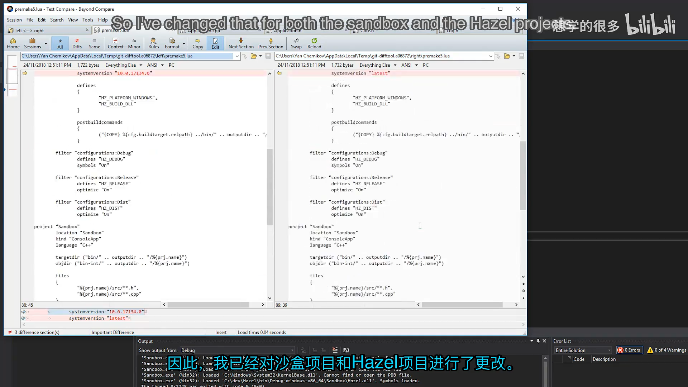
📷 使用系统最新版本并统一源码包含路径
回到原视频 (00:29:55)
7.2 Core.h 增加位标志宏
BIT(x) 把数字 1 左移 x 位，为事件分类提供互不重叠的二进制位：
#define BIT(x) (1 << x)
每个分类只占用一位，因此多个分类可以通过按位或组合，也可以低成本地做交集判断。
7.3 让日志系统支持 Event
为了让 HZ_TRACE(e) 这样的代码直接把事件传给 spdlog，Log.h 增加了 spdlog 的自定义类型输出支持：
#include "spdlog/fmt/ostr.h"
Event 又提供了全局输出流运算符，因此日志系统可以自动调用 ToString()：
inline std::ostream& operator<<(std::ostream& os, const Event& e)
{
return os << e.ToString();
}
这表明字符串输出只承担调试职责，不进入事件系统的核心数据路径。
7.4 在 Application 中创建测试事件
为了验证事件创建、分类和日志链路，Application::Run() 先手工创建一个窗口缩放事件：
WindowResizeEvent e(1280, 720);
if (e.IsInCategory(EventCategoryApplication))
{
HZ_TRACE(e);
}
if (e.IsInCategory(EventCategoryInput))
{
HZ_TRACE(e);
}
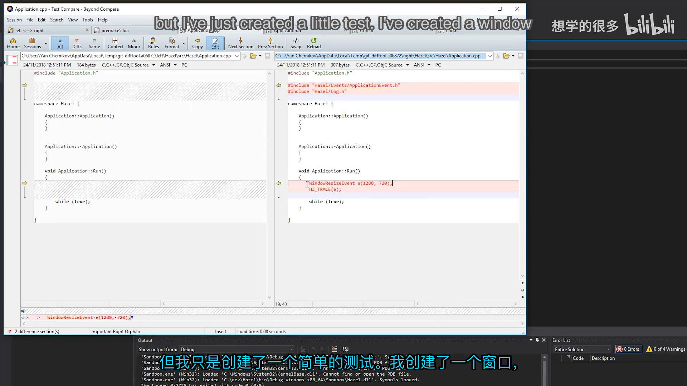
📷 Application.cpp 中的窗口缩放事件测试
回到原视频 (00:31:11)
这个例子故意检查两个分类：
- 它属于
Application，所以第一次日志会被执行； - 它不属于
Input，所以条件为假，不会重复输出； - 如果两个条件都成立，同一个事件可能被记录两次，这正是分类过滤需要明确表达意图的原因。
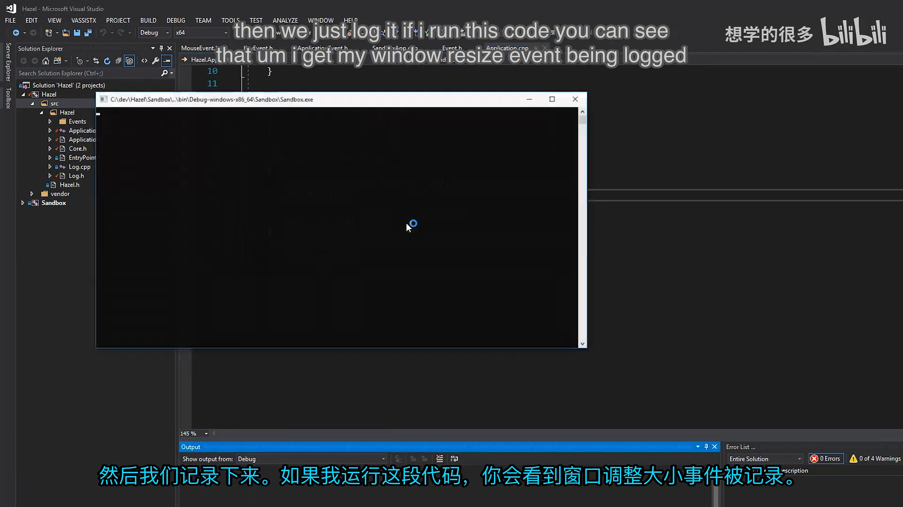
📷 运行测试后只输出一次 WindowResizeEvent
回到原视频 (00:31:54)
8. 当前限制与下一步
本节完成的是事件系统的第一阶段。它已经能描述事件、携带数据、判断分类、分发处理并阻止传播，但仍有三项明确边界。
第一，事件是阻塞且即时处理的。系统没有事件队列、缓冲或延迟分发，因此某一个处理函数耗费时间时，会直接影响产生事件时的调用链。
第二，当前系统只负责“通知发生了什么”，还不能回答“此刻某个输入是否持续按下”。输入状态需要额外保存按钮或按键的当前状态，Cherno 把这项工作规划给未来的 Input Manager。
第三，AppTickEvent、AppUpdateEvent 和 AppRenderEvent 仍是待定设计。它们与应用程序主循环紧密相关，也许直接调用更合适，因此暂时不会强行事件化。
下一步计划是先引入预编译头，减少公共标准库和第三方头文件带来的重复编译，再实现真正的窗口类。窗口接入后，本节创建的键盘、鼠标和窗口事件才会进入实际运行路径。
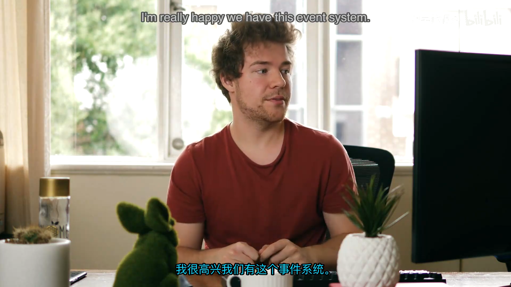
📷 后续规划：预编译头、窗口类与输入系统
回到原视频 (00:34:23)
9. 本节结论
这一讲建立了一个足够小、但结构完整的事件系统骨架：
- 用
EventType标识具体类型； - 用位字段
EventCategory表达多个正交分类； - 用基类和继承共享键盘、鼠标、应用程序事件的公共数据；
- 用宏消除事件元数据样板；
- 用
m_Handled控制事件消费和传播； - 用
EventDispatcher降低客户端的类型判断复杂度； - 用日志输出运算符把自定义事件接入 spdlog。
最重要的设计原则不是“所有东西都必须变成事件”，而是根据模块边界和职责选择合适机制。事件适合通知状态变化和输入发生；主循环阶段和持续输入状态则可能需要更直接的调用或专门管理器。